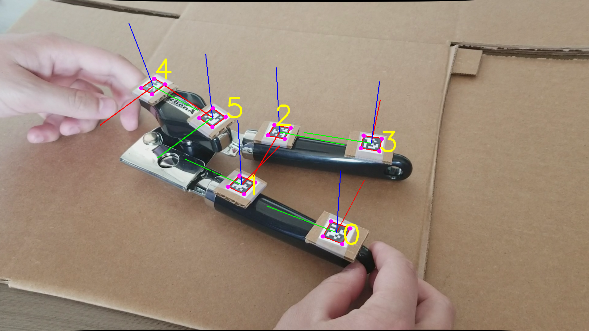
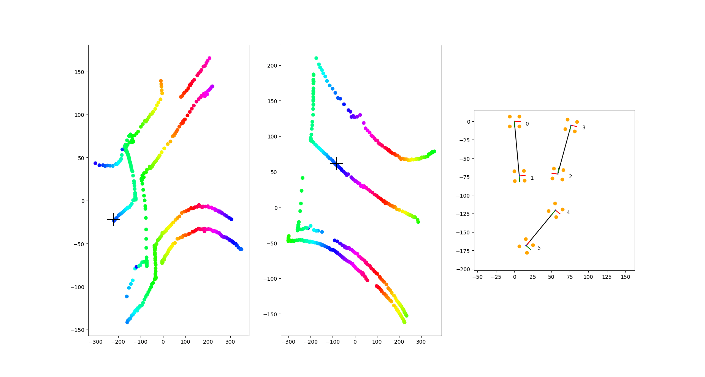

Topologically-Informed Atlas Learning
Thomas Cohn, Nikhil Devraj, Odest Chadwicke Jenkins
We present a new technique that enables manifold learning to accurately embed data manifolds that contain holes, without discarding any topological information. Manifold learning aims to embed high dimensional data into a lower dimensional Euclidean space by learning a coordinate chart, but it requires that the entire manifold can be embedded in a single chart. This is impossible for manifolds with holes. In such cases, it is necessary to learn an atlas: a collection of charts that collectively cover the entire manifold. We begin with many small charts, and combine them in a bottom-up approach, where charts are only combined if doing so will not introduce problematic topological features. When it is no longer possible to combine any charts, each chart is individually embedded with standard manifold learning techniques, completing the construction of the atlas. We show the efficacy of our method by constructing atlases for challenging synthetic manifolds; learning human motion embeddings from motion capture data; and learning kinematic models of articulated objects.
This work will appear in Proceedings of the 2022 IEEE International Conference on Robotics and Automation (ICRA).
Read the Paper
Explore the Codebase
Watch the Talk
Check out the Conference Poster
You should also check out Nikhil's blog post about the project.

The can opener we used to construct a kinematic model. It is annotated with the computed AprilTag poses, which serve as the input for our atlas learning.

The learned nonparametric kinematic model for the can opener. The left two images are the embeddings of the individual coordinate charts, colored according to the angle made by the smaller, twisting handle. Moving horizontally across the two charts represents the continuous rotation of the smaller handle, as shown by the AprilTag poses in the right image.
Citation
@INPROCEEDINGS{cohn2022atlas,
author = {Cohn, Thomas and Devraj, Nikhil and Jenkins, Odest Chadwicke},
booktitle = {2022 International Conference on Robotics and Automation (ICRA)},
title = {Topologically-Informed Atlas Learning},
year = {2022},
volume = {},
number = {},
pages = {3598-3604},
doi = {10.1109/ICRA46639.2022.9812311},
url = {https://ieeexplore.ieee.org/abstract/document/9812311}
}